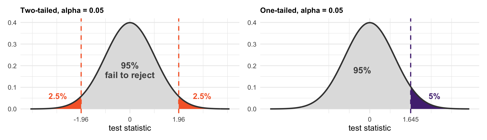
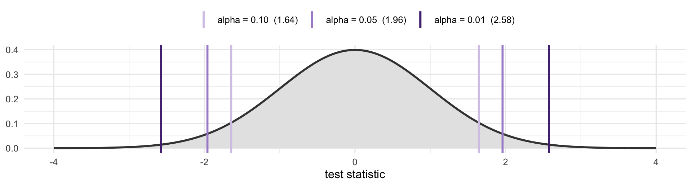
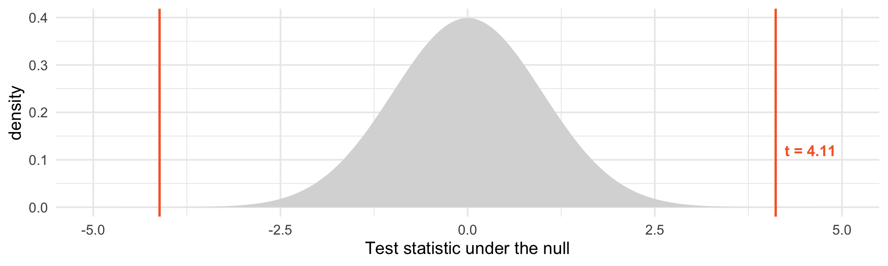
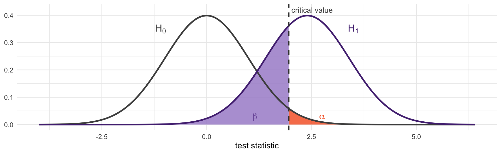
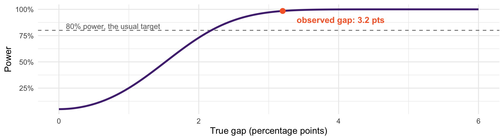

[1] 0.03203285[1] 0.007784969And: What exactly is (and isn’t) a p-value?
We know the sampling distribution: centered on the truth, spread \(\sigma/\sqrt{n}\), shape normal
That is everything needed to ask: could our result have happened by chance, or is it evidence of a real relationship?
We already did this once, informally, with the binomial. Today we do it properly.
Assume nothing is going on
Work out what data would look like if that were true
Compare your actual data to that
If your data would be very unlikely under the null assumption, reject that assumption
Notice we never prove the interesting claim. We only make its opposite look untenable. This is how frequentist statistics works.
\(H_0\): the null hypothesis. Usually “no difference,” “no effect,” “the coefficient is zero.”
\(H_1\): the alternative. Usually “something is going on.”
The null is not a neutral description of the world. It is a specific claim precise enough to reject with good evidence.
For the résumé study: \(H_0\) is that names do not matter, so the two callback rates are equal.
Take your estimate, center it on the null, and scale it by its standard error:
\[T = \frac{\widehat{\theta} - \theta_0}{\widehat{SE}(\widehat{\theta})}\]
The numerator: how far the data landed from the null
The denominator: how far it might plausibly land by chance
The ratio: how many standard errors out you are
Under \(H_0\), and by the CLT, this is approximately standard normal.
We are not assuming the data are normal. We are using the CLT on the estimator.
\(\widehat{\theta} = \bar{X}_w - \bar{X}_b\) is a difference of two sample means
Each is approximately normal by the CLT, so their difference is too
Under \(H_0\) its mean is \(\theta_0\), and its standard deviation is the standard error
Dividing by \(\widehat{SE}\) standardizes it to \(N(0,1)\), as we saw a few lectures ago. The null hypothesis supplies the center; the CLT supplies the shape.
[1] 0.03203285[1] 0.007784969A gap of 3.2 percentage points, with a standard error of about 0.78 points.
About 4 in 100,000
Read as: if names truly did not matter, we would see a gap this large or larger about four times in every hundred thousand studies
That is a statement about data under an assumption
\[p = P\big(|T| \geq |t_{\text{obs}}| \;\big|\; H_0\big)\]
\(t_{\text{obs}}\) is the value you actually got; \(T\) is the random test statistic
The conditioning bar is doing enormous work: everything is computed assuming \(H_0\) is true
Small \(p\) means your data would be unusual in that world
Never say a \(p\)-value is the probability the null is true. That would be \(P(H_0 \mid \text{data})\) — the other direction. That requires a Bayesian approach.
Two-tailed: \(H_1\) is “the gap is not zero.” You count evidence in both directions.
One-tailed: \(H_1\) is “the gap is positive.” Only one direction counts.
The one-tailed \(p\) is exactly half the two-tailed one.
Default to two-tailed. It is the honest choice when a surprise in either direction would interest you.
A one-tailed test is defensible only if you would treat a large effect in the other direction as no different from zero
That is rarely true. If white-sounding names had gotten fewer callbacks, would you have shrugged?
Even if your hypothesis is directional, two-tailed is generally the better choice.
Instead of computing \(p\) and comparing to \(\alpha\), compare the statistic to a critical value:
[1] 1.959964[1] 1.644854Reject if \(|t| > 1.96\). Our \(t =\) 4.11, so we reject.
The set of \(t\) values that lead to rejection is the rejection region
This is why “\(|t| > 2\)” became a rule of thumb, and why old textbooks are full of tables.

Orange and purple are the rejection regions. Same total area, 5% either split across both tails, or piled into one.

Demanding more confidence means demanding a more extreme statistic. Our \(t =\) 4.11 clears all three.

The grey curve is what the null predicts. Our result is out in the orange sliver.
Choose a significance level \(\alpha\) in advance, conventionally 0.05
If \(p < \alpha\), reject \(H_0\)
Otherwise, fail to reject — which is not the same as accepting it
“We found no significant effect” and “we showed there is no effect” are different things! The first is often just a report that your sample was small or your data was noisy.
| \(H_0\) true | \(H_0\) false | |
|---|---|---|
| Reject \(H_0\) | Type I error (\(\alpha\)) | Correct |
| Fail to reject | Correct | Type II error (\(\beta\)) |
Type I: you claim an effect that is not there. Rate \(= \alpha\), by construction.
Type II: you miss an effect that is there. Rate \(= \beta\).
Power \(= 1 - \beta\): the probability of detecting a real effect
Power rises with sample size, with effect size, and with lower outcome variance
An underpowered study is not merely inconclusive, it is actively misleading
When power is low, the few results that clear \(p < 0.05\) are systematically overestimates
Power is easiest to understand with two distributions: what the statistic does if \(H_0\) is true, and what it does if \(H_1\) is true.

Orange — \(H_0\) is true but the statistic lands past the cutoff. Type I error, area \(\alpha\).
Purple — \(H_1\) is true but the statistic falls short. Type II error, area \(\beta\).
Power is everything under the right-hand curve past the line: \(1 - \beta\). Here about 0.67.
Now the tradeoffs are visible:
Move the cutoff right (smaller \(\alpha\)) → orange shrinks, purple grows. You cannot reduce both.
Raise \(n\) → both curves narrow, the overlap shrinks, and power rises without touching \(\alpha\)
That is why more data is the only free lunch. Everything else is a trade between the two errors.
Power depends on the true effect, which you never know. So we compute it across a range:

At 2,435 résumés per group: a 2-point gap is detected 73% of the time, a 1-point gap only 25%.
Suppose the true gap really is 3.2 points. Run the study at different sizes and look only at the significant results:
set.seed(8410)
map_dfr(c(100, 500, 2435), function(n) {
e <- replicate(20000, {
x <- rbinom(n, 1, 0.0965); y <- rbinom(n, 1, 0.0645)
d <- mean(x) - mean(y); s <- sqrt(var(x)/n + var(y)/n)
c(d, abs(d/s) > 1.96)
})
tibble(n = n, power = round(mean(e[2, ]), 2),
est_pts = 100 * mean(abs(e[1, e[2, ] == 1]))) # in percentage points
}) |>
mutate(exaggeration = round(est_pts / 3.2, 1),
`mean estimate when significant (pts)` = round(est_pts, 1)) |>
select(n, power, `mean estimate when significant (pts)`, exaggeration) |>
knitr::kable(format.args = list(big.mark = ",", scientific = FALSE))| n | power | mean estimate when significant (pts) | exaggeration |
|---|---|---|---|
| 100 | 0.13 | 9.3 | 2.9 |
| 500 | 0.46 | 4.7 | 1.5 |
| 2,435 | 0.98 | 3.2 | 1.0 |
At \(n = 100\), power is 0.13 — and the significant estimates average 2.9 times the truth
At \(n = 2{,}435\), power is 0.98 and the estimates are unbiased
An underpowered study does not just miss things. When it does find something, that something is inflated — because only unusually large estimates clear the threshold.
This is why small, surprising, barely-significant findings so often fail to replicate. Small studies do not just fail to find things; they exaggerate the things they do find.
It comes from Fisher, and it has no mathematical justification
A study at \(p = 0.049\) and one at \(p = 0.051\) contain nearly identical evidence
Treating the threshold as a decision boundary is what produces \(p\)-hacking
Recall Paul the Octopus: run enough tests and something crosses 0.05 by construction. A \(p\)-value is only interpretable if you know how many comparisons were made.
Is there a race gap in some industry? Test each of the six at \(\alpha = 0.05\), when truly there is no gap anywhere:
[1] 0.2649081Each test alone: 5%. All six: a 26% chance of at least one false positive.
Twenty subgroups: 64%
The more tests you run, the less any single \(p < 0.05\) means — unless you account for how many you ran.
With \(m\) tests, reject only when \(p < \alpha / m\):
[1] 0.008333333[1] 0.04896984Brings the chance of any false positive back under 5%
The cost is power: smaller gaps go undetected
Less blunt alternatives (Holm, Tukey) follow the same logic
Decide your comparisons in advance, and report how many you made.
Not the probability that \(H_0\) is true — that would require Bayes’ rule and a prior
Not the probability your result is a fluke
Not a measure of effect size — a trivial difference becomes “significant” with enough \(n\)
Not evidence for \(H_1\) specifically. It only says your data sit awkwardly with \(H_0\).
The first item is the \(P(A|B)\) versus \(P(B|A)\) confusion from earlier in the semester.
| n per group | Gap needed for p < 0.05 (pct pts) |
|---|---|
| 100 | 7.52 |
| 1,000 | 2.38 |
| 10,000 | 0.75 |
| 100,000 | 0.24 |
With 100,000 résumés per group, a gap of 0.5 percentage points would be “highly significant” — and would matter to nobody.
Always report the estimate and its uncertainty, not just the verdict. Which is next class.
Run t.test(cb ~ quality, data = resumes). What are \(H_0\), the test statistic, and the \(p\)-value?
Does résumé quality significantly predict callbacks overall? Compare that to the race gap.
Take a random subsample of 200 résumés and rerun the race comparison. Is it still significant? Why might it not be?
A colleague says “\(p = 0.30\), so there is no effect.” Rewrite that sentence correctly.
Read: Gelman, Hill and Vehtari, Ch. 5
Next class: confidence intervals: reporting a range instead of a verdict